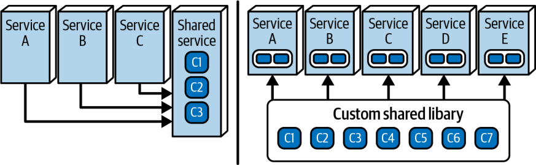
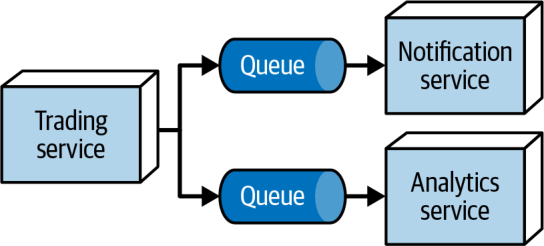
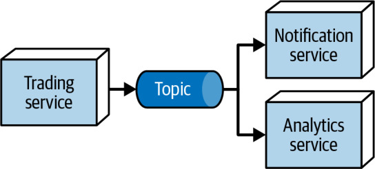

در همان فصل ۱، سه قانون معماری نرمافزار (laws of software architecture) را معرفی کردیم:
تقریباً همهٔ مثالهای این کتاب این قوانین را به تصویر کشیدهاند و همین نکته به داستان پیدایش آنها اشاره دارد. هنگام نوشتن ویرایش نخست، امیدوار بودیم چیزهای فراوانی بیابیم که دربارهٔ معماری نرمافزار جهانشمول به نظر میرسند و آنها را بهصورت قوانین مدوّن کنیم. از شگفتی ما، در ویرایش نخست تنها به دو قانون رسیدیم و سپس هنگام نوشتن ویرایش دوم، قانون دیگری را کشف کردیم. این سه قانون، همسو با نیت اولیهٔ ما، تا حد زیادی جهانشمول به نظر میرسند و بسیاری از دیدگاههای مهم را برای معماران نرمافزارِ در حال کار روشن میکنند.
در این فصل کوتاه، این قوانین را در پرتو مثالهایی که نشان دادهایم بازمینگریم و به چند ظرافت در تحلیل مصالحهها اشاره میکنیم.
قانون اول ما یکی از ویژگیهای تعیینکنندهٔ معماری نرمافزار است: همهچیز مصالحه است. بسیاری گمان میکنند کار معمار نرمافزار این است که برای مسائل بغرنج، راهحلهایی از جنس گلولهٔ نقرهای (silver bullet) بیابد و قهرمان شود، اما چنین چیزی بهندرت رخ میدهد. (معماران بهندرت برای تصمیمهای خوب اعتباری میگیرند، اما همیشه برای تصمیمهای بد سرزنش میشوند.) نه، کار واقعی معماری نرمافزار، تحلیل مصالحههاست.
به چند دلیل باور داریم که هر معماری باید بهجای تبلیغ برای رویکردی خاص، شهرت خود را بهعنوان داوری بیطرف (objective arbiter) در مصالحهها صیقل دهد.
نخست اینکه مبلغگری (evangelism) در معماری در درازمدت خطرناک است، زیرا بهترین شیوهٔ دیروز معمولاً به ضدالگوی فردا بدل میشود. معماران تصمیمهای مصالحهای را بر پایهٔ عوامل و شرایط کنونی و با دانشی ناقص، به بهترین شکلی که از دستشان برمیآید میگیرند. با این حال، حتی اگر تصمیمی در زمان اتخاذش درست باشد، اکوسیستم توسعهٔ نرمافزار همواره در حال تکامل و دگرگونی است؛ یعنی شرایط آرامآرام تغییر میکند و احتمالاً سرانجام آن تصمیم را تضعیف (یا باطل) میکند. اگر معمار برای تبلیغ آن راهحل سرمایهٔ اجتماعی (social capital) خرج کرده باشد، وقتی بعدها آن تصمیم باید تغییر کند، ممکن است شهرتش آسیب ببیند. همیشه در انتخابهای فناورانه روشنبین و بیطرف بمانید تا اعتبارتان را به تصمیمی گره نزنید که با گذر زمان خوب از آب درنیامده است.
دوم اینکه تصمیمگیرندگان در سازمانها چندان در پی حمایت پرشور نیستند، بلکه بیطرفی سنجیده میخواهند. معماری که بهعنوان فرد مرجعِ تحلیل بیطرفانهٔ مصالحهها شناخته شود، به دارایی ارزشمندی برای سازمانش بدل میشود. وقتی تصمیمی حیاتی در میان است، تصمیمگیرندگان کسی را میخواهند که بتوانند به داوریاش اعتماد کنند؛ آن شخص باید شما باشید.
بیایید چند مثال از تحلیل مصالحهها را برای دو تصمیم معماری نرمافزار بررسی کنیم و سپس به یک خلأ رایج در درک این موضوع بپردازیم.
یکی از معماهای رایج معماران، رفتار مشترک در معماریهای توزیعشدهای مانند میکروسرویسها یا EDA است: آیا باید از کتابخانهٔ مشترک (shared library) استفاده کنیم که در زمان ساخت (build time) درون هر سرویس کامپایل میشود، یا از سرویس مشترک (shared service) که دیگر سرویسها در زمان اجرا (runtime) فراخوانیاش میکنند؟ شکل ۲۷-۱ این دو گزینه را نشان میدهد.

در شکل ۲۷-۱، سرویسِ سمت چپ رفتار مشترک را کپسوله میکند و دیگر سرویسها برای دسترسی به آن، فراخوانیاش میکنند. در سمت راست، کتابخانهای مشترک داریم که پیش از استقرار درون هر سرویس کامپایل میشود. کدام بهتر است؟
تا اینجا خوانندگان پاسخ همهٔ اینگونه پرسشها را میدانند: «بستگی دارد!» اما باید به پرسش بعدیِ ناگزیر نیز پاسخ دهید: «به چه چیزی بستگی دارد؟» پاسخ این پرسش، مانند بسیاری از تصمیمهای غیربدیهی در معماری نرمافزار، بیدرنگ آشکار نیست؛ پس زمان آن رسیده است که شما در جایگاه معمار، تحلیل مصالحهها را آغاز کنید.
نخست باید همهٔ مصالحههای وابسته به بافتار را که در این راهحل اثرگذارند مشخص کنید. این فهرست کاملاً به سازمان و راهحل وابسته است؛ بنابراین باید به شناخت خود از سازمان، چشمانداز فناوری، توانمندیهای تیم، بودجهها و هر چیز دیگری تکیه کنید که گزینههای مصالحه را شکل میدهد. برای این راهحل، فهرست زیر را از عوامل مرتبط فراهم کردهایم:
کد ناهمگون (heterogeneous code): اگر راهحلها روی چند سکو نوشته شده باشند، کار با سرویس آسانتر است؛ زیرا فراخوانها، فارغ از پشتهٔ فناوری، از طریق شبکه به سرویس دسترسی مییابند و سکوی پیادهسازی اهمیتی ندارد. در مورد کتابخانه، تیم برای هر پشتهٔ فناوری به نسخهای از کد نیاز دارد و باید این نسخهها را همگام نگه دارد؛ امری که پیچیدگی کلی پروژه را بهشدت افزایش میدهد.
نوسانپذیری بالای کد (high code volatility): به یاد آورید که نوسانپذیری کد میسنجد که کد با چه سرعتی تغییر میکند (که معمولاً حجم تغییرات یا churn نامیده میشود). در سرویس، فراخوانها بهمحض استقرار سرویسِ بهروزشده به کارکرد تازه دسترسی دارند؛ اما اگر لازم باشد کتابخانه را تغییر دهید، برای بهرهگیری از قابلیتهای تازه باید هر سرویس را دوباره کامپایل و مستقر کنید.
توانایی نسخهبندی تغییرات (ability to version changes): نسخهبندی در کتابخانه بسیار آسانتر از سرویس است. وقتی کتابخانه نیاز به بهروزرسانی دارد، تیم میتواند تفاوتهای نسخه را در زمان کامپایل حل کند و تنها همان چیزی را بسازد که نیاز دارد. در سرویس، اطلاعات نسخه باید در زمان اجرا تعیین شود و این امر تعامل با سرویس را پیچیده میکند.
ریسک کلی تغییر (overall change risk): از نظر ریسک تغییر، کتابخانه وضع بهتری دارد. وقتی کد کتابخانه را تغییر دهید و آن را با موفقیت درون سرویس کامپایل کنید، میتوانید اطمینان زیادی داشته باشید که کار میکند. در مقابل، سرویس ممکن است بدون هیچگونه وارسی در زمان کامپایل تغییر کند و همین، احتمال بروز خطای زمان اجرا را در لحظهٔ فراخوانی بالا میبرد.
کارایی (performance): کتابخانه آشکارا کارایی بهتری دارد، زیرا فراخوانی کارکردهای مشترک، فراخوانیهایی درونفرایندی (in-process) است؛ حال آنکه سرویس به فراخوانیهای شبکهای نیاز دارد. این فراخوانیها به دلیل تأخیر شبکه و عوامل دیگر بسیار کندتر از فراخوانیهای درونفرایندیاند.
تحمل خطا (fault tolerance): چنانکه در فصل ۹ بررسی کردیم، دسترسی زمان اجرا به سرویسها همواره در معرض مشکلات احتمالی شبکه است و سرویسِ مورد بحث در اینجا نیز از این قاعده مستثنا نیست. کتابخانه تحمل خطای بهتری فراهم میکند: وقتی سرویس را کامپایل، آزمون و مستقر کردید، میتوانید اطمینان زیادی به پایداری آن داشته باشید.
مقیاسپذیری (scalability): فراخوانیهای میان سرویسها، درست مانند کارایی، از تأخیر رنج میبرند و این تأخیر از مقیاسپذیری میکاهد. بنابراین کتابخانه مقیاسپذیری بهتری ارائه میدهد، زیرا دسترسی به رفتار مشترک، فراخوانی درونفرایندیِ بسیار کارآمدی است.
وقتی فهرست عوامل مهم خود را مشخص کردید، میتوانید ماتریسی بسازید تا عملکرد هر گزینه را در برابر هر معیار مقایسه کنید؛ چنانکه در جدول ۲۷-۱ نشان داده شده است.
| عامل | کتابخانهٔ مشترک | سرویس مشترک |
|---|---|---|
| کد ناهمگون | − | + |
| نوسانپذیری بالای کد | − | + |
| توانایی نسخهبندی تغییرات | + | − |
| ریسک کلی تغییر | + | − |
| کارایی | + | − |
| تحمل خطا | + | − |
| مقیاسپذیری | + | − |
انباشت امتیازهای مثبت برای کتابخانهٔ مشترک، آن را برنده میکند… دستکم برای همین عوامل و در همین بافتار. این گزینه ممکن است راهحل مسئلهٔ پیش رو باشد یا نباشد—شاید لازم باشد وزندهی (weighting) بیشتری اعمال کنید (برای جزئیات بیشتر، بخش «نتیجهٔ فرعی دوم: نمیتوانید فقط یک بار انجامش دهید» در صفحهٔ ۴۹۴ را ببینید)—اما اکنون شما و تیمتان تصویر خوبی از نیروهای درگیر دارید.
تحلیل مصالحهای را در نظر بگیرید: تیم شما در حال ساخت یک معماری توزیعشده است تا اطلاعات معاملات را هم به سرویس Notification و هم به سرویس Analytics بفرستد، و میکوشید تصمیم بگیرید که برای پیادهسازی این رفتار از صف (queue) استفاده کنید یا موضوع (topic).
گزینهٔ نخست صف است؛ یعنی یک پروتکل ارتباطی نقطهبهنقطه (point-to-point). چنانکه در فصل ۲ دیدید، در این حالت ناشر میداند چه کسی پیام را دریافت میکند. ناشر برای رسیدن به چند مصرفکننده باید برای هر مصرفکننده پیامی به یک صف جداگانه بفرستد. اگر سرویس Trading بخواهد با صفها، سرویس Analytics و سرویس Reporting را از معاملات باخبر کند، پیادهسازی به شکلی خواهد بود که در شکل ۲۷-۲ میبینید.

در شکل ۲۷-۲، سرویس Trading از طریق یک صف برای هر مصرفکننده پیامی صادر میکند. هر مصرفکننده صف خودش را دارد و فرستنده در هر صف پیامی میگذارد.

توپولوژی جایگزین بهجای صف از موضوع استفاده میکند که بهجای ارتباط نقطهبهنقطه، پخش (broadcast) را پیاده میکند. در شکل ۲۷-۳، سرویس Trading تنها یک پیام در یک موضوع منتشر میکند. هر مصرفکننده مشترک آن موضوع است و همهٔ مصرفکنندگان با ظاهر شدن پیام، اعلانی دریافت میکنند. در این حالت، ناشر پیام نمیداند (و اهمیتی هم نمیدهد) که مصرفکنندگان چه کسانیاند؛ در واقع تیم میتواند هر زمان مصرفکنندهٔ تازهای بیفزاید، بیآنکه دیگر مصرفکنندگان یا تولیدکننده را تغییر دهد.
هر دو گزینه شدنیاند؛ پس چگونه باید تصمیم بگیرید؟ البته با انجام تحلیل مصالحهها.
با صفها، هر سرویسی که سرویس Trading باید آن را باخبر کند به صفی جداگانه نیاز دارد. اگر سرویس Notification و سرویس Analytics به اطلاعات متفاوتی نیاز داشته باشند، این ویژگی خوشایند است، زیرا میتوانید به هر صف پیام متفاوتی بفرستید. سرویس Trading از تکتک سیستمهایی که با آنها ارتباط دارد آگاه است و همین «شنود» را برای سرویسی دیگر (که احتمالاً سرویسی مزاحم است) دشوارتر میکند. این ویژگی بهویژه وقتی امنیت در صدر فهرست اولویتهاست سودمند است. چون هر صف مستقل است، میتوانید صفها را جداگانه پایش کنید و در صورت نیاز حتی بهطور مستقل مقیاس دهید. سرویس Trading با مصرفکنندگانش کوپلینگ تنگاتنگ دارد و دقیقاً میداند چند مصرفکننده وجود دارد. با این حال، اگر بخواهید به سرویس Compliance نیز پیام بفرستید، باید سرویس Trading را بازنویسی کنید تا پیامها را به صف سومی هم بفرستد.
جدول ۲۷-۲ مصالحههای استفاده از صفها را در این پروژه خلاصه میکند.
| مزیت | عیب |
|---|---|
| پشتیبانی از پیامهای ناهمگون برای مصرفکنندگان مختلف | کوپلینگ بیشتر |
| امکان پایش مستقل عمق صف | سرویس Trading باید به چند صف متصل شود |
| امنیت بیشتر | نیاز به زیرساخت اضافی |
| گسترشپذیری کمتر (برای مصرفکنندگان بیشتر باید صف افزود) | پشتیبانی خوب از گسترشپذیری و تکاملپذیری |
بیایید همین تمرین را برای موضوعها انجام دهیم. یک مزیت آشکار است: موضوعها بهشدت گسترشپذیرند. هر مصرفکنندهٔ تازهای که مثلاً به انطباق با مقررات علاقه دارد، میتواند بیآنکه به رفتار موجود دست بزند، مشترک آن موضوع شود. اما این مزیت جنبههای منفی هم دارد: هر مصرفکننده باید همان پیام یکسان را از موضوع مصرف کند و این امر میتواند به کوپلینگ مُهری (stamp coupling) بینجامد (که در شکل ۹-۹ نشان داده شد). افزون بر این، چون هر مصرفکننده میتواند کل پیام را بخواند، دغدغههای امنیتی پیش میآید: آیا همه باید بتوانند کل پیام را بخوانند؟
با در دست داشتن این دیدگاه، میتوانید جدول مصالحهها را بسازید؛ این جدول در جدول ۲۷-۳ آمده است.
| مزیت | عیب |
|---|---|
| کوپلینگ کم | پیام همگون برای همهٔ مصرفکنندگان |
| سرویس Trading تنها یک پیام تولید میکند | امکان پایش یا مقیاسدهی تکتک مصرفکنندگان وجود ندارد |
| گسترشپذیرتر/تکاملپذیرتر | امنیت کمتر |
| — | گزینههای کمتر برای مقیاسپذیری |
اکنون که تحلیل مصالحهها را انجام دادهاید، باید به اهداف سازمانی این راهحل بازگردید و ببینید کدام گزینه تناسب بهتری دارد. اگر امنیت مهمتر است، احتمالاً باید صفها را برگزینید. اگر سازمان بهسرعت در حال رشد است و سرویسهای دیگری نیز به معاملات علاقه دارند، ممکن است گسترشپذیری در اولویت باشد و این شما را به استفاده از موضوعها سوق میدهد.
قانون اول ما دو نتیجهٔ فرعی (corollary) دارد. نخستین آنها این است:
اگر فکر میکنید چیزی کشف کردهاید که مصالحه نیست، به احتمال زیاد فقط هنوز آن مصالحه را شناسایی نکردهاید… فعلاً.
جوهرهٔ هر تصمیم معماری نرمافزار تحلیل مصالحههاست؛ اما وقتی با تصمیمی روبهرو میشوید که به نظر میرسد هیچ مصالحهای ندارد، چه باید کرد؟ توصیهٔ ما: به جستوجو ادامه دهید!
بازاستفادهٔ کد (code reuse) را در نظر بگیرید. بیگمان این رویهای سراسر سودمند است، اینطور نیست؟ هرچه سازمان بتواند کد بیشتری را بازاستفاده کند، کد کمتری باید بنویسد و در زمان صرفهجویی میکند و از دوبارهکاری میپرهیزد.
دو عامل تعیین میکنند که بازاستفادهٔ کد تا چه حد اثربخش خواهد بود. معماران اغلب اولی را کشف میکنند، اما دومی را از قلم میاندازند. عامل نخست انتزاع است: اگر بتوانید این کد را انتزاع کنید و از چند نقطهٔ فراخوانی (call point) به کار ببرید، نامزد خوبی برای بازاستفاده است. عامل دوم نوسانپذیری پایین (low volatility) است. وقتی تیمی ماژولی از کد را بازاستفاده میکند که مدام در حال تغییر است، در کل سیستم آشفتگی پدید میآید. هر بار که کد مشترک تغییر میکند، همهٔ فراخوانهای آن کد باید خود را با آن تغییر هماهنگ کنند. حتی اگر تغییر از نوع تغییر شکننده (breaking change) نباشد، تیم باز هم باید وارسی کند که آن تغییر چیزی را خراب نکرده است. وقتی معماریها کد را نابهجا بازاستفاده میکنند، تیمها سرانجام در سراسر معماری به دنبال تغییرات شکننده میدوند. این یکی از درسهای کلیدی بود که جامعهٔ معماران از سبک معماری سرویسگرای ارکستراسیونمحور (SOA) (که در فصل ۱۷ به آن پرداختیم) آموخت؛ سبکی که یکی از فلسفههای بنیادینش تلاش برای بازاستفادهٔ هرچه بیشترِ کد بود. از دیدگاه عملی، تیمهایی که در آن معماریها کار میکردند گویی در شن روان شنا میکردند: هر تغییری میتوانست اثرهای جانبی پیشبینیناپذیری را موجوار در سراسر سیستم بپراکند.
مصالحهٔ پنهان همین است: بازاستفادهٔ اثربخش کد به انتزاع خوب و نوسانپذیری پایین نیاز دارد. به همین دلیل است که موفقترین اهداف بازاستفاده در معماری، «لولهکشی زیرساختی» است: چارچوبهای فناوری، کتابخانهها، سکوها و مانند آن. بخشی از بیشتر برنامههای کاربردی که از همه سریعتر تغییر میکند حوزه است (یعنی همان انگیزهٔ اصلی نوشتن نرمافزار)؛ بنابراین مفاهیم حوزه نامزدهای بسیار بدی برای بازاستفادهاند. (توجه کنید که همین نکته شالودهٔ اصل زمینهٔ محدود در DDD است: هیچ زمینهٔ محدودی نمیتواند هیچیک از جزئیات پیادهسازی زمینهٔ محدود دیگری را بازاستفاده کند.)
چرا نمیتوانیم همهٔ چیزهای خوب را با هم داشته باشیم؟ مصالحهها! (Why We Can’t Have Nice Things—Trade-Offs!)
ما در مقام مشاوران حرفهای، اغلب از مشتریانمان درخواستهایی از این دست میشنویم: «ایدهٔ میکروسرویسها و معماریهای توزیعشدهای را که درجهٔ بالایی از جداسازی (decoupling) دارند دوست داریم، چون چابکی بالا و استقرار سریع را ممکن میکنند. با این حال، درجهٔ بالایی از بازاستفادهٔ سازمانی (institutional reuse) هم میخواهیم تا تیمها مدام کد را از نو ننویسند.»
ناچاریم در اینجا خبر بد را بدهیم: نمیتوانید هر دوی اینها را داشته باشید، زیرا سیستم بازاستفاده را از طریق کوپلینگ پیاده میکند. هیچ سازمانی نمیتواند جداسازی و درجهٔ بالایی از بازاستفاده را با هم داشته باشد. این دو اساساً با هم ناسازگارند. این نمونهٔ بارزی از آن است که سازمانها چگونه ممکن است مصالحههای کلیدی را درست درک نکنند.
چه خوب میشد اگر معمار میتوانست فقط یک بار تحلیل مصالحه انجام دهد؛ یعنی فقط حسابی فکر کند و یک بار برای همیشه تصمیم بگیرد که برای همهٔ گردشکارها از کرئوگرافی استفاده کند. اما تحلیل مصالحه با دو مشکل روبهروست. نخست اینکه اغلب دهها یا حتی صدها متغیر (فنی و غیرفنی) در تصمیم سهم دارند: پیچیدگی، تجربهٔ تیم، بودجه، توپولوژی تیم، فشار زمانبندی… و این فهرست پایانی ندارد. تفاوتهای ظریف در این متغیرها میتواند یک تحلیل خاص را به این سو یا آن سو براند و همین، تحلیل مصالحه را به تمرینی مستمر بدل میکند. برای معماران خطرناک است که تصمیمهایی فراگیر و نیمهدائمی بگیرند که بر فرضهایی استوارند که شاید برای کاربردهای آیندهٔ این راهحل معتبر نباشند.
این نتیجهٔ فرعی را تضمین امنیت شغلی معماران بدانید! ناچاریم تحلیل مصالحه را بارها و بارها انجام دهیم، حتی برای موقعیتهایی که ظاهراً مشابهاند. این امر بر این ایده تأکید میکند که کار واقعی، تحلیل مصالحههاست، نه گرفتن تصمیمهای دائمی و بینقص.
قانون دوم ما بر اهمیت «چرا» نسبت به «چگونه» تأکید میکند. ما در مقام معمارانی باتجربه، میتوانیم به سیستمی موجود نگاه کنیم و به دیگران بگوییم چگونه کار میکند. با این حال، تصمیمهایی وجود خواهند داشت که روشن نیست چرا معمار پیشین این گزینه را بر گزینهای دیگر ترجیح داده است، زیرا او همهٔ معیارهای تصمیم را همراه با راهحل نهاییاش ثبت نکرده است.
به همین دلیل است که بر اهمیت استفاده از نمودارهای معماری (architecture diagrams) و سوابق تصمیم معماری (ADR) (که در فصل ۲۱ به آنها پرداختیم) تأکید میکنیم. هر تحلیل مصالحه حجم عظیمی از بافتار پدید میآورد که در خود راهحل دیده نمیشود. مستند کردن آن تحلیل (همراه با مصالحهها و محدودیتهای شناختهشدهٔ راهحل) حیاتی است تا معماران آینده (که شاید خود شما باشید) ناچار نشوند فقط برای فهمیدن چرایی تصمیم، تحلیل را از نو انجام دهند.
یکی از ضدالگوهای رایج در تحلیل مصالحه، ضدالگوی خارج از بافتار (Out of Context antipattern) است. این ضدالگو زمانی رخ میدهد که معمار مصالحهها را میفهمد، اما نمیداند چگونه همهٔ آنها را بر پایهٔ بافتار کنونی وزندهی کند.
تحلیل مصالحهای را که در بخش «کتابخانهٔ مشترک در برابر سرویس مشترک» در صفحهٔ ۴۸۸ انجام دادیم در نظر بگیرید. اگر بهطور عینی بنگریم، کتابخانهٔ مشترک راهحل برتر به نظر میرسد، زیرا ارزیابیهای مثبت بیشتری نسبت به ارزیابیهای منفی به دست آورد. با این حال، این تحلیل مصالحه یک کاستی بالقوه دارد: آیا همهٔ معیارهای آن وزن یکسانی دارند؟
تیمی را تصور کنید که روی چند سکو کد دارد. این تیم نگرانی چندانی دربارهٔ کارایی یا مقیاس ندارد، اما شیوهای تمیز برای مدیریت رفتار مشترک میخواهد. در این حالت، دو معیار نخستِ مصالحه اولویت بسیار بالاتری دارند و همین باید تیم را به انتخاب سرویس مشترک سوق دهد. افزون بر این، تیم از پیش دریافته است که باید کدام مشکلات را کاهش دهد.
معماران برای ساختن معیارهای مصالحه به تجربه تکیه میکنند، اما باید این معیارها را وزندهی نیز بکنند تا تناسب درست را برای راهحل بیابند. تحلیل مصالحهٔ عمومی چندان سودمند نیست؛ این تحلیل تنها وقتی ارزشمند میشود که در بافتاری مشخص به کار رود.
در ویرایش نخست، تنها دو قانون را شناسایی کرده بودیم. با این حال، بهتدریج دریافتیم که قانون سومی هم وجود دارد:
بیشتر تصمیمات معماری دودویی نیستند، بلکه بر طیفی میان دو سرِ افراطی ایستادهاند.
چه خوب میشد اگر در جهانی با تصمیمهای دودویی، روشن و تمیز زندگی میکردیم؛ اما معماری نرمافزار در چنین جهانی وجود ندارد. بسیاری متوجه شدهاند که ارائهٔ تعریفهایی جامع برای مفاهیم مهم معماری نرمافزار چه دشوار است: معماری در برابر طراحی، ارکستراسیون در برابر کرئوگرافی، موضوعها در برابر صفها و مانند آن. دلیل بنیادین این است که معیارهای تصمیم دودویی نیستند، بلکه در امتداد طیفی نسبتاً درهموبرهم قرار میگیرند.
در بخش «معماری در برابر طراحی» در صفحهٔ ۱۷، طیف میان معماری و طراحی را بررسی کردیم و نشان دادیم چگونه میتوان تعیین کرد که یک تصمیم خاص در کجای این طیف قرار دارد. در واقع، این قانون راهی سودمند برای اندیشیدن دربارهٔ تصمیمهایی فراهم میکند که به سمت معماری نرمافزارِ این طیف نزدیکترند تا به سمت طراحی:
تصمیم معماری نرمافزار تصمیمی است که هر یک از گزینههایش مصالحههای چشمگیری دارد.
اگر هرچه در معماری نرمافزار هست یک مصالحه باشد، آنگاه یک تصمیم معماری باید برای هر گزینه مصالحههایی در بر داشته باشد.
در مقام معمار، نکوشید هر تصمیمی را به یک انتخاب دودویی فروبکاهید؛ چنین تصمیمهایی در جهان ما اندکاند. این یکی از دلایلی است که هر پاسخی در معماری نرمافزار «بستگی دارد» است: بستگی دارد به اینکه معیار مورد نظر در کجای طیف راهحلهای ممکن قرار گیرد.
ما معماران تصمیمهایمان را در باتلاقی از عدم قطعیت میگیریم. کنار آمدن با این وضع آزارنده اما ضروری است. نهتنها گاهی ناچاریم تصمیمهای مهم را بر پایهٔ اطلاعات ناقص بگیریم، بلکه اغلب حتی اگر همهٔ اطلاعات را هم در اختیار داشتیم، تصمیم چندان قاطع و روشن نبود، زیرا جایی بر طیفی میان دو سرِ افراطی قرار دارد.
به معماری نرمافزار خوش آمدید!
چگونه طراحان بزرگ پرورش دهیم؟ البته که طراحان بزرگ طراحی میکنند.
پس چگونه قرار است معماران بزرگ پرورش دهیم، وقتی در سراسر دوران حرفهایشان کمتر از شش بار فرصت معماری کردن پیدا میکنند؟
تمرین، راه اثباتشدهٔ ساختن مهارتها و بهتر شدن در هر کاری در زندگی است و معماری نیز از این قاعده مستثنا نیست. معماران تازهکار و باتجربه را تشویق میکنیم که مهارتهایشان را در هنرِ طراحی معماری پیوسته صیقل دهند و گستردگی فنی فردیشان را نیز بیفزایند. برای این منظور، چند کاتای معماری بر پایهٔ مثالهای این کتاب فراهم کردهایم که میتوانید آنها را در وبسایت همراه کتاب (companion website) بیابید. شما را تشویق میکنیم که از آنها برای تمرین و ساختن مهارتهایتان در معماری بهره بگیرید.
کسانی که از کاتاهای ما استفاده میکنند اغلب میپرسند: آیا جایی راهنمای پاسخها وجود دارد؟ متأسفانه نه. به نقل از Neal:
در معماری پاسخ درست یا غلط وجود ندارد، تنها مصالحهها وجود دارند.
وقتی ما نویسندگان استفاده از کاتاهای معماری را در کلاسهای آموزشی حضوریمان آغاز کردیم، در ابتدا نقشههایی را که دانشجویان میکشیدند نگه میداشتیم تا مخزنی از پاسخها فراهم کنیم. اما خیلی زود از این کار دست کشیدیم، زیرا دریافتیم که اینها مصنوعاتی ناقصاند. تیمها با ترسیم توپولوژیها ثبت کرده بودند که راهحلهایشان را چگونه پیاده کردهاند. «چرایی» بسیار جالبتر بود؛ اما هرچند تیمها مصالحههایی را که در نظر گرفته بودند در کلاس توضیح میدادند، فرصت نوشتن سوابق تصمیم معماری را نداشتند. نگه داشتن تنها «چگونگی» یعنی فقط نیمی از داستان را در اختیار داشتیم.
پس توصیهٔ پایانی ما این است: همیشه بیاموزید، همیشه تمرین کنید و بروید و کمی معماری کنید!
| واژهٔ انگلیسی | معادل مصوب/بهکاررفته در این فصل |
|---|---|
| Laws of Software Architecture | قوانین معماری نرمافزار |
| Silver Bullet | گلولهٔ نقرهای |
| Objective Arbiter | داور بیطرف |
| Evangelism | مبلغگری |
| Social Capital | سرمایهٔ اجتماعی |
| Shared Library | کتابخانهٔ مشترک |
| Shared Service | سرویس مشترک |
| Build Time | زمان ساخت |
| Runtime | زمان اجرا |
| Heterogeneous Code | کد ناهمگون |
| High Code Volatility | نوسانپذیری بالای کد |
| Churn (version control) | حجم تغییرات |
| Ability to Version Changes | توانایی نسخهبندی تغییرات |
| Overall Change Risk | ریسک کلی تغییر |
| Performance | کارایی |
| In-Process | درونفرایندی |
| Fault Tolerance | تحمل خطا |
| Scalability | مقیاسپذیری |
| Weighting | وزندهی |
| Queue | صف |
| Topic | موضوع |
| Point-to-Point | نقطهبهنقطه |
| Broadcast | پخش |
| Stamp Coupling | کوپلینگ مُهری |
| Corollary | نتیجهٔ فرعی |
| Code Reuse | بازاستفادهٔ کد |
| Call Point | نقطهٔ فراخوانی |
| Low Volatility | نوسانپذیری پایین |
| Breaking Change | تغییر شکننده |
| Decoupling | جداسازی |
| Institutional Reuse | بازاستفادهٔ سازمانی |
| Architecture Diagram | نمودار معماری |
| Architectural Decision Record (ADR) | سابقهٔ تصمیم معماری (ADR) |
| Out of Context Antipattern | ضدالگوی خارج از بافتار |
| Companion Website | وبسایت همراه کتاب |